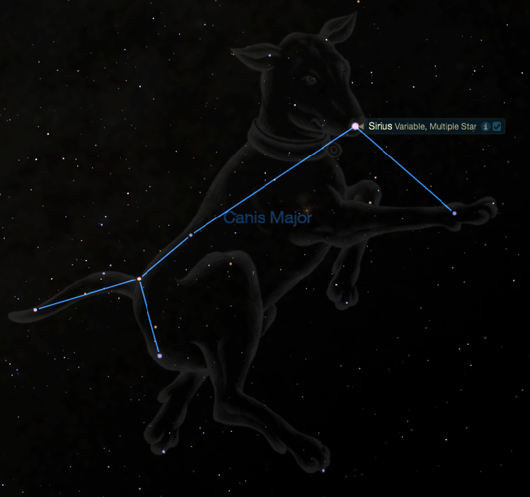

Sirius

All stars shine but none do it like Sirius, the brightest star in the night sky. Aptly named, Sirius comes from the Greek word Seirius, meaning, "searing" or "scorching." Blazing at magnitude -1.42, it's twice as bright as any star in our sky besides the Sun.
Sirius resides in the constellation Canis Major, the Big Dog, and is commonly called the Dog Star. In ancient Greece the dawn rising of Sirius marked the hottest part of summer—the season's "dog days."
Sirius no longer marks the hottest part of summer, because it now rises later in the year. This happens because the Earth has been wobbling slowly around its axis in a 25,800-year cycle. This wobble—called precession—is caused by the gravitational attraction of the Moon on Earth's equatorial bulge, and it gradually changes the locations of stars on the celestial sphere.
The best time to see Sirius is probably in winter (for northern-hemisphere observers), because it rises fairly early in the evening. To find the Dog Star, use the constellation Orion as a guide. Follow the three belt stars 20 degrees southeast to the brightest star in the sky. Your fist at arm's length covers about 10 degrees of sky, so it's about two fist-widths down.
Sirius, the red giant star Betelgeuse, and Procyon in Canis Minor form a popular asterism known as the Winter Triangle. Sirius is 23 times as luminous as the Sun, and about twice the mass and diameter. At a mere 8.5 light-years away from Earth, Sirius seems so bright in part because it's the fifth-closest star to the Sun. The brilliance of Sirius illuminates not only our night skies, but also our understanding. While observing it in 1718, Edmond Halley (of comet fame) discovered that stars move in relation to one another—a principle now known as proper motion.
In 1844, the German astronomer Friedrich Bessel observed that Sirius had a wobble, as if it were being tugged by a companion star. And in 1862, Alvan Clark solved this mystery (while testing his new 18.5-inch lens, the t refracting telescope in the world at that time). Clark discovered that Sirius was not one star but two. This proved to be the first discovery in what became a whole class of stars: the compact stellar remnant or white dwarf. These are stars that, once depleting all their hydrogen, collapse to a very dense core. Astronomers have calculated that Sirius's companion—dubbed Sirius B—contains the mass of the Sun in a package as small as the Earth.
Sixteen milliliters of matter from Sirius B (that is, about one cubic inch of the stuff) would weigh 2000 kilograms on Earth. At magnitude 8.5, it is one four-hundredth as luminous as the Sun. The brighter and larger companion is now known as Sirius A.